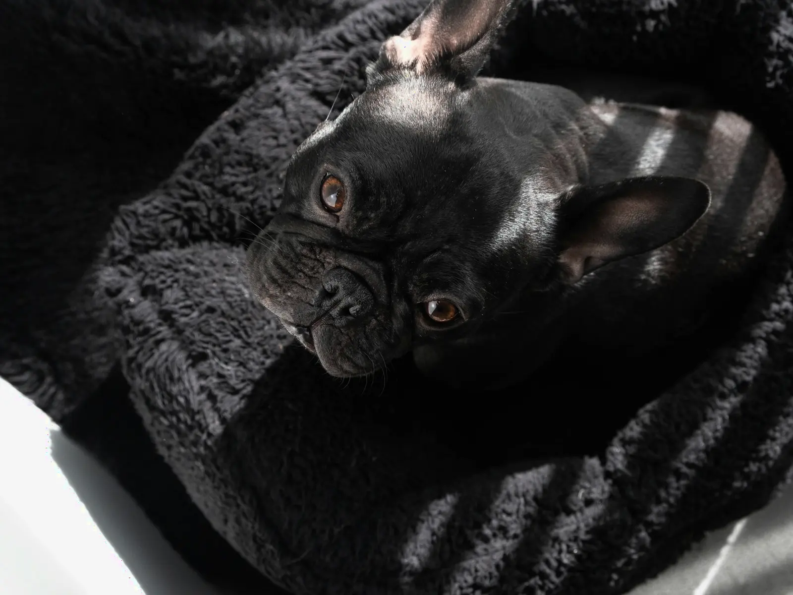
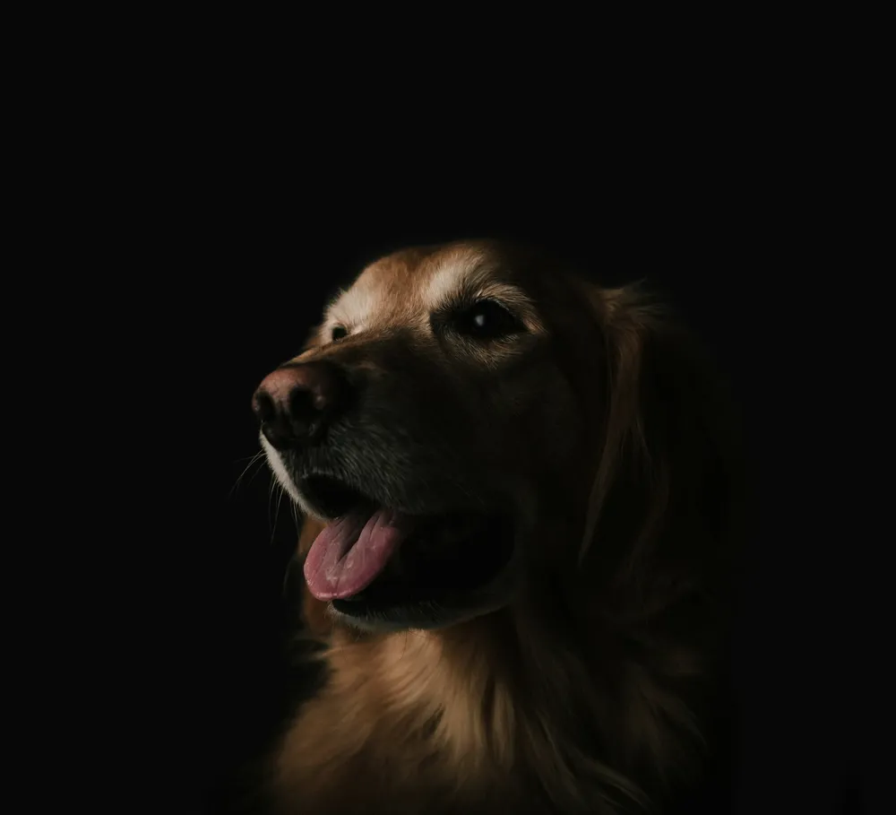

Banho e tosa no Mathias Velho
Zeus Pet Spa
Banho e tosa com todo cuidado e carinho. E uma loja bem variada, com produtos e remédios para o seu pet.
4,7 no Google, em 53 avaliaçõesO que fazemos
Banho, tosa e loja
Tudo no mesmo lugar, na R. Mato Grosso: o banho e a tosa do seu pet e o que ele usa em casa.

-
Banho
Banho tranquilo, com cuidado e carinho do começo ao fim. O seu pet volta para casa limpo e perfumado.
-
Tosa
Tosa feita com calma, do jeito que você combinar com a equipe na hora de deixar o seu pet.
-
Loja de produtos
Uma loja bem variada, com o que o seu pet usa no dia a dia. Dá para resolver tudo na mesma visita.
-
Remédios para pets
Remédios para pets na própria loja. Pergunte pelo WhatsApp se tem o que você procura.

Um banho digno do Olimpo
Cuidado e carinho no Mathias Velho
4,7 no Google, em 53 avaliações
O que contam os tutores
“A Natália e Adriana são apaixonadas por pets. Ótimo atendimento!”
Paula S.
“Atendimento nota 10! A loja é bem variada, e o banho e tosa deles é muito bom.”
Miguel G.
“Loja bem variada […] são bem cuidadosos com os cãezinhos…”
Marcelo K.
“Meu cachorro adora ir tomar banho lá…”
Adroaldo M.
“Bom atendimento, variedades de produtos, e remédios.”
Antonio M.
“Lugar ótimo, preços bons. Diversas opções de produtos, atendimento bom.”
Misael O.
Mathias Velho, Canoas
Agende o banho do seu pet
Mande uma mensagem pelo WhatsApp, combine o dia e o horário e traga o seu pet até a R. Mato Grosso.
- R. Mato Grosso, 54, Mathias Velho, Canoas
- Junto ao mercado, com estacionamento gratuito, como conta um cliente.
- Entrada e estacionamento acessíveis para cadeira de rodas.
- Cartão de crédito, débito e pagamento por aproximação.
- Dia e horário combinados pelo WhatsApp.
Recado de quem fez esta página
Para a equipe do Zeus Pet Spa
Sou o Conrado Lemos, desenvolvedor aqui de Canoas. Montei esta página para mostrar como ficaria o site de vocês. Tudo acima é o que o cliente veria.
- A nota, as avaliações, o endereço, os serviços e as formas de pagamento vieram do perfil de vocês no Google. Os horários não aparecem lá, por isso ficaram de fora até vocês me passarem.
- Todas as fotos são ilustrativas, de banco de imagens. Na versão final entram fotos profissionais do espaço de vocês e dos pets que vocês atendem.
- Textos, serviços e avaliações em destaque são revisados e escolhidos por vocês.
R$ 1.000, com o site no ar em até 3 dias No endereço próprio do Zeus Pet Spa. O pagamento é só na entrega, depois da aprovação de vocês. O domínio é à parte, cerca de R$ 40 a R$ 55 por ano.
Gostaram? É só responder a minha mensagem no WhatsApp.